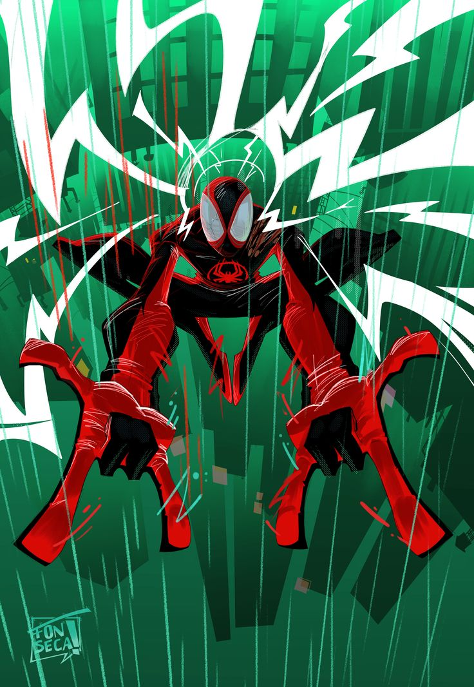
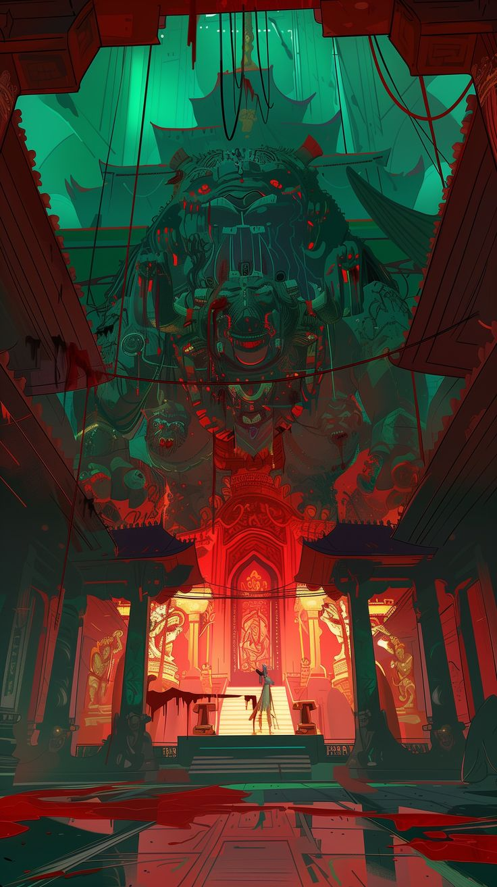
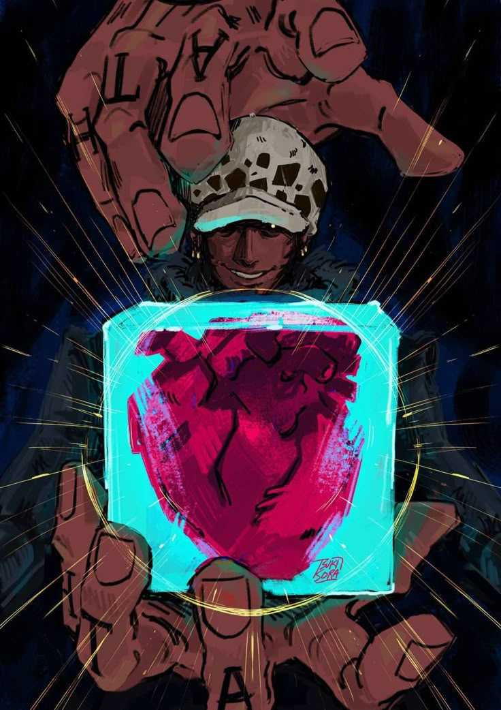
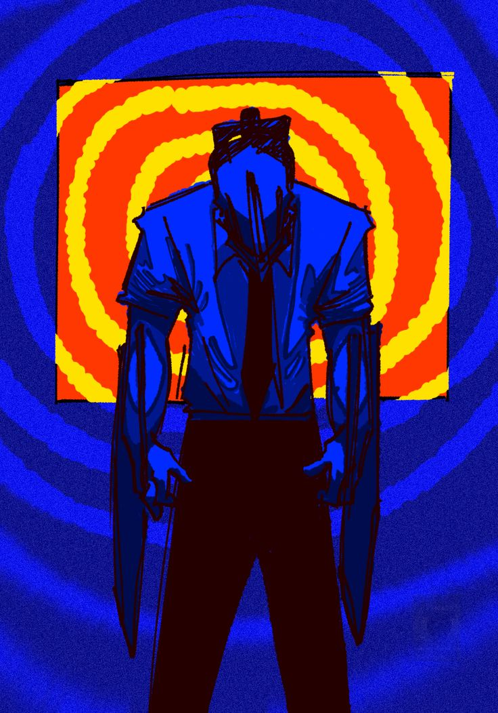
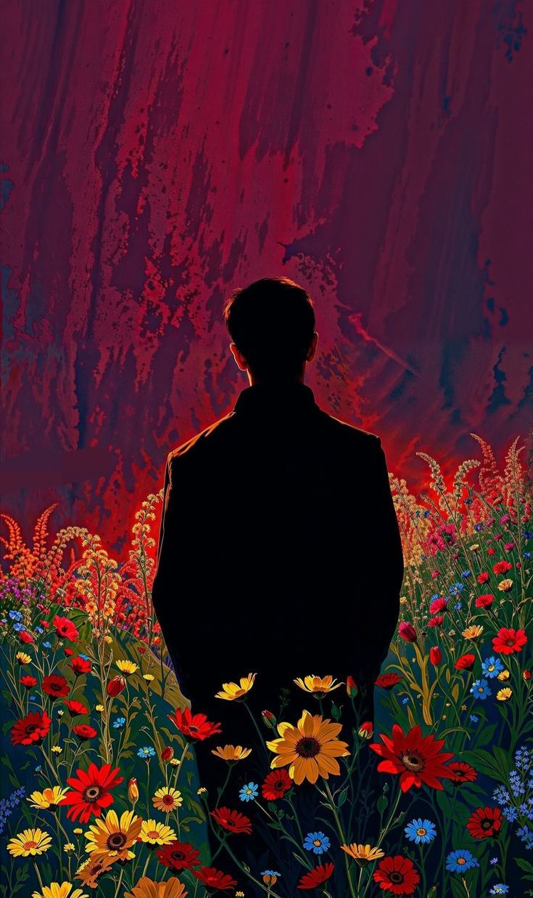

This is a sample article about a complex subject. The key insight here is that understanding the fundamentals is critical before moving on to advanced topics.
The first concept to grasp is the relationship between inputs and outputs in any system. Without this foundation, the rest becomes noise.
A second important idea: iteration beats perfection. Systems that learn from feedback loops outperform those designed in isolation.
One major warning: over-engineering early leads to brittle systems. Start simple, add complexity only when forced.
The most important takeaway is that structured thinking applied to messy domains is itself a learnable skill.


